10g (9.0.4)
Part Number B10270-01
Library |
Contents |
Index |
| Oracle Discoverer Administrator Administration Guide (Online Help) 10g (9.0.4) Part Number B10270-01 |
|
This chapter explains how you create and maintain End User Layers using Discoverer Administrator, and contains the following topics:
The End User Layer (EUL) is the metadata (i.e. data about the actual data in a database) that is simple and easy for Discoverer end users to understand. You use Discoverer Administrator to create, customize, and maintain this view for your users so they can easily access data in Discoverer. You must have access to at least one EUL in order to use Discoverer. Access is granted using the Privileges dialog, described in Chapter 6, "Controlling access to information".
The EUL insulates Discoverer end users from the complexity usually associated with databases. It provides an intuitive, business-focused view of the database using terms that Discoverer end users are familiar with and can easily understand. This enables Discoverer end users to focus on business issues instead of data access issues.
The EUL contains the metadata that defines one or more business areas. A business area is a conceptual grouping of tables and/or views that apply to a user's specific data requirements. Business areas can be set up to reflect the needs of the user or group of users accessing the EUL.
For example, an accounting department might have an accounting business area that represents data about budgets and finance, while project leaders in an engineering department might have a business area specifically for projects requiring budget information. Although some of the columns may be the same, the exact combination of tables and views for each department may be different.
The EUL Manager dialog enables you to create or delete, the set of tables that make up an EUL.
When a Discoverer manager defines folders and items in a business area using Discoverer Administrator, Discoverer generates the appropriate SQL statements (that define the selections from a table, view, or column) and stores them in the EUL tables. When a Discoverer end user executes a query (in Discoverer Plus or Discoverer Viewer), Discoverer generates the corresponding SQL statement and sends it to the database, which in turn returns the results to display in Discoverer. The Discoverer end user does not have to understand any SQL to access, analyze, and retrieve data. It is all handled by Discoverer.
You can export EUL objects (e.g. business areas, workbooks, folders, items) from one database and import them into another database. For example, you might want to move EUL objects when transitioning from a development environment to a production environment.
You can import and export EULs and EUL objects in the following ways:
For more information, see "Which export/import method to use".
Note: The EUL preserves the database's data integrity. Nothing that you or the Discoverer end user does with Discoverer affects the application data in the database; Discoverer only affects the metadata held in the EUL. There are however, certain PL/SQL functions that can affect the data in the database (for more information, see your database administrator).
An End User Layer (EUL) owner is the database user that an EUL is created for.
A database user can only own one EUL. If you are connected to your own EUL and you attempt to create a new one, Discoverer Administrator prompts you to delete your existing EUL. If you create a EUL for a database user that already owns an EUL, Discoverer Administrator prompts you to delete the existing EUL before creating the new one.
The EUL owner maintains and modifies their own EUL and can grant access to the EUL to other users. Depending on the privileges given to the other users, those users can use and make changes to the EUL.
When you create an EUL, you specify who has access to it, as follows:
Note: It is recommended that you specify PRIVATE access, where security is an issue. You can subsequently define business area access and privileges for users and roles as required.
To change access to an existing EUL, you must be logged in as the owner of the EUL or as a user who has the following Discoverer task privileges:
For more information, see Chapter 6, "Controlling access to information".
To create an End User Layer in an Oracle database, the database user that the EUL is being created in must have the following database privileges:
The database user must also have the following specified:
For more information about the default tablespace, see "Create EUL Wizard: Step 2 dialog".
If you are running Discoverer against an Oracle 8.1.7 or later Enterprise Edition database, the database user requires further privileges to make use of Discoverer's manual summary management and Automated Summary Management (ASM) functionality. For more information, see:
The EUL Manager dialog enables you to:
Note: The above privileges are all you need to create a new EUL for a new database user. You can connect to Discoverer Administrator as a database user with only these privileges and create a new EUL in a new database user.
If you create an EUL for a new Oracle database user, Discoverer grants the necessary privileges and sets the default tablespace and quota.
To create an End User Layer for a non-Oracle database user, the database user must have the following database privileges:
Discoverer Administrator does not enable you to create new users for non-Oracle databases.
You can maintain EULs in Discoverer Administrator if your database user has the Administration privilege.
To apply the Administration privilege to a database user, see Chapter 6, "How to specify a user or role (responsibility) to perform a specific task".
The EUL Gateway provides a way for Discoverer to populate an EUL with metadata from another source, such as Oracle Designer. The EUL Gateway allows metadata defined in another tool or application to be loaded directly into the EUL.
To set up an EUL Gateway see the document eulgatew.doc located in the <ORACLE_HOME>\discoverer\kits directory.
For information about loading a business area from the EUL Gateway see Chapter 4, "How to create a business area using the Load Wizard".
To create an EUL for an existing database user:
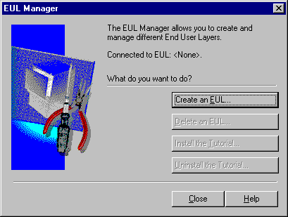
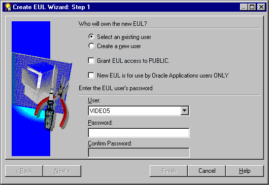
Note: It is recommended that you clear this check box where security might be an issue.
Discoverer Administrator displays the Creating EUL progress bar and creates a new EUL for the specified database user.
When the new EUL has been created, Discoverer gives you the option to install the Discoverer tutorial in the new EUL. For more information, see the Oracle Discoverer Administrator Tutorial.
Note: This feature is not available with non-Oracle databases. If you are using a non-Oracle database, ask your database administrator to create the necessary user IDs on the database.
For more information about the privileges required to create an EUL in a new database user, see "What privileges do you need to create an End User Layer in an Oracle database?".
To create an EUL in a new database user:
If the Create a new user radio button is unavailable, contact your database administrator to grant the CREATE USER privilege.
Note: It is recommended that you clear this check box where security might be an issue.
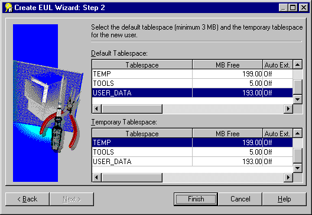
If you are unsure which to choose, see your database administrator. For more information, see the "Create EUL Wizard: Step 2 dialog".
Discoverer Administrator displays the Creating EUL progress bar and creates a new database user and new EUL in that database user.
When the new database user and EUL have been created, Discoverer gives you the option to install the Discoverer tutorial in the new EUL. For more information, see the Oracle Discoverer Administrator Tutorial.
You might want to delete an EUL for a number of reasons. For example, it might be an old or a test EUL.
Note: You must connect as the owner of the EUL that you want to delete.
To delete an EUL:
Discoverer prompts you to confirm that you want to delete the current EUL.
If the EUL name displayed is incorrect, go back to Step 2 and use the correct connect string to connect as the EUL owner.
When you click OK, Discoverer prompts you to confirm that you want to delete all EUL tables, all EUL information and workbooks in the database and all summary data and information.
Discoverer deletes the EUL objects for the current database user.
You can view or change which EUL is the default EUL for the current database user (i.e. the EUL used when the current database user connects to Discoverer Administrator).
Note: You can only select an alternative EUL if the database user has access to more than one EUL.
To view or change the default EUL:
Typically, you will want to:
There are a number of different ways to copy EULs and EUL objects, depending on whether you want to:
In all these cases, you perform an export operation followed by an import operation. For more information, see "Which export/import method to use".
If you use Discoverer Administrator to export EULs or EUL objects, you will create a Discoverer EUL export file (with an .EEX suffix). Having created an .EEX file, you can then use Discoverer Administrator to import the .EEX file.
Note that you can import .EEX files:
To copy EUL objects between EULs you first export the EUL objects to a file, then import them into a new EUL or new database.
You copy EUL objects between EULs using
You use the Discoverer Export Wizard to export EUL objects to an EUL export file (with a suffix .EEX). Having exported the objects, you can then import the .EEX file using the Discoverer Import Wizard.
The EUL objects that you export (to an .EEX file) include business areas, folders, item hierarchies, date hierarchies, item classes, workbook definitions (created in Discoverer Desktop and Discoverer Plus), PL/SQL function registration information, summary folders, and the automated summary management (ASM) policy.
Refer to the following topics to find out how to export or import EUL objects using the Discoverer user interface:
Use this option to export an entire EUL to a file when you want to copy objects from the EUL into a new EUL or to create a backup.
Use this option when you want to use the export file to update an existing EUL with selected business areas.
Use this option when you want to use the export file to update an existing EUL with selected EUL objects. For example, when applying a minor change to a production business area.
Use this option to import EUL objects (e.g. business areas, folders, hierarchies, calculations) from one EUL in order to re-use them in another EUL.
Note: The Export Wizard does not export the database, EUL tables, or database objects referenced by the EUL. To export these objects, you must follow the steps in "How to export an EUL using the standard database export utility".
You use the Discoverer command line interface to export/import EUL objects without using the Discoverer user interface. For more information about the Discoverer command line inteface, see Chapter 21, "What is the Oracle Discoverer command line interface?".
Refer to the following topics to find out how to export and import EUL objects using the Discoverer command line interface:
Use this option to copy EUL objects from one database to another by exporting them to a Discoverer export file (.EEX) and then importing the .EEX file to another database using the command line interface.
Use this option to import EUL objects into a new database.
Note: The Discoverer command line interface export facility does not export the database, EUL tables, or database objects referenced by the EUL definitions. To export these objects, you must follow the steps in "How to export an EUL using the standard database export utility".
You use standard database export/import commands to export/import the database, EUL tables, and database objects referenced by the EUL definitions.
Use the following tasks to export/import EUL objects between databases:
Use this option to export an entire EUL to a file when you want to copy objects from the EUL into a new EUL or to create a backup.
Use this option to import the EUL business areas, EUL tables and saved workbooks from a database dump file (.DMP) into a new EUL owner on the new database.
How you export or import an EUL depends on:
We recommend that the version of the Oracle database and the version of the Oracle database client software installed on your machine are the same. If the versions are not the same (e.g. if the EUL is on an Oracle8i database and Oracle9i client software is installed on your machine), you might not be able to follow the instructions below. If you are unable to export the EUL, contact your database administrator and ask them to export the EUL for you.
Use this option to export an entire EUL to a file when you want to copy objects from the EUL into a new EUL or to create a backup.
To export the entire EUL using the Export Wizard:
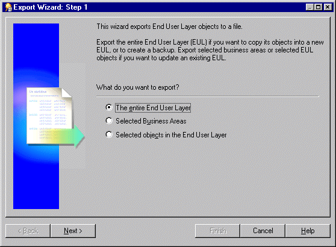
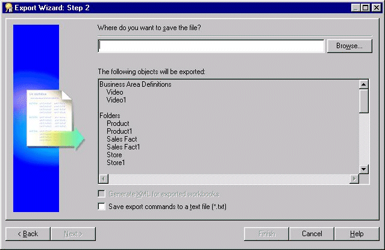
You use the above dialog to specify a name and location for the export file.
This enables you to browse for a location to save the EUL export file.
This enables you to view workbook definitions in an XML browser.
Note: The export file (*.EEX) is always in XML format but workbooks by default are saved inside it as a binary to save space and time. Select this check box to save the workbook definitions additionally as XML inside the export file.
This creates an additional file containing the commands used to create this export and applies the file extension .txt. This file can then be used in conjunction with the command line interface (for further information about the command line interface, see Chapter 21, "Oracle Discoverer command line interface").
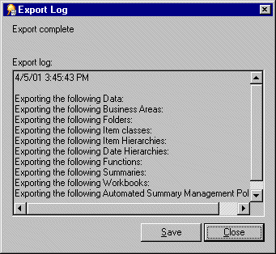
The Export Log displays information about what has been exported.
Use this option when you want to use the export file to update an existing EUL with selected business areas.
To export the selected business areas using the Export Wizard:
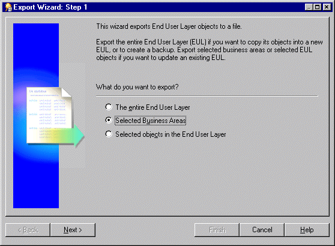
You can select more than one business area at a time by holding down the Ctrl key and clicking another business area.
This enables you to browse for a location to save the business area export file.
This creates an additional text file containing the commands used to create this export and applies the file extension .txt. This file can then be used in conjunction with the command line interface (for further information about the command line interface, see Chapter 21, "Oracle Discoverer command line interface").
The Export Log displays information about what has been exported.
Note: If you are copying business areas between EULs, continue with step 2 of the following task, see Chapter 4, "How to copy business areas between EULs".
Use this option when you want to use the export file to update an existing EUL with selected EUL objects. For example, when applying a minor change to a production business area.
To export the selected objects using the Export Wizard:
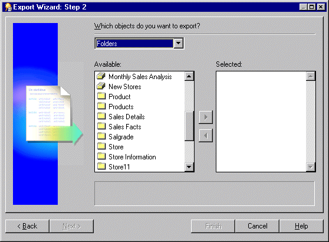
For example, folders, item classes and item hierarchies.
Note: If you select a business area above, Discoverer exports just the definition of the business area and not its folders and items. To export business area folders and items you need to select them explicitly.
You can select more than one object at a time by holding down the Ctrl key and clicking another object.
This enables you to browse for a location to save the export file.
Note: The export file (*.EEX) is always in XML format but workbooks by default are saved inside it as a binary to save space and time. Select this check box to save the workbook definitions additionally as XML inside the export file.
This creates an additional text file containing the commands used to create this export and applies the extension .txt. This file can then be used in conjunction with the command line interface (for further information about the command line interface, see Chapter 21, "Oracle Discoverer command line interface").
The Export Log displays information about what has been exported.
Use this option to copy EUL objects from one database to another by exporting them to a Discoverer export file (.EEX) and then importing the .EEX file to another database using the command line interface. This is the first of two tasks that enable you to copy EUL objects from one database to another. You must complete this export task before you can import the EUL objects into another database.
To export EUL objects from a database using the Discoverer command line interface:
For example, to export the Video Store Tutorial business area and two workbooks ("Vistr4 - Video Tutorial Workbook" and "Vidaf4 - Analytic Function Examples") to the vidstr.eex file, you might type the following:
D:\orant\bin\dis51adm.exe /connect eulowner/eulowner@orcl.world /export "D:\vidstr.eex" "Video Store Tutorial" /workbook "Vistr4 - Video Tutorial Workbook" /workbook "Vidaf4 - Analytic Function Examples"
For more information about exporting EUL objects using the Discoverer command line interface, see Chapter 21, "/export (EUL objects)".
Use this option to import EUL objects into a new database. Before you can complete this task you must export the EUL objects to a Discoverer export file (.EEX) (for more information, see "How to export End User Layer objects (to import to another database) using the Discoverer command line interface"). This is the second of two tasks enabling you to copy EUL objects from one database to another.
To import End User Layer objects into a database using the Discoverer command line interface:
For example, to import the vidstr.eex file, created above you might type the following:
D:\orant\bin\dis51adm.exe /connect eulowner/eulowner@orcl.world /import "D:\vidstr.eex"
For more information about importing EUL objects using the Discoverer command line interface, see Chapter 21, "/import (EUL objects)".
Use this option to export all business areas, EUL tables and saved workbooks to a .dmp file.
To export an EUL using the standard database export utility (assuming the EUL resides on an Oracle9i database and you are using a machine on which you have installed Oracle Developer Suite):
For example, to export the EUL to D:\ORACLE9i and the MS-DOS window currently displays C: , you would:
exp <eulowner>/<password>@<dbname> file=<filename.dmp> owner=<eulowner>
For example, to export an EUL owned by a database user hrmgr to a file hreul.dmp, you would type the following:
exp hrmgr/hrpswrd@HRDB file=hreul.dmp owner=hrmgr
The EUL tables (and associated synonyms, views, and other definitions) are exported to the specified .dmp file in the D:\ORACLE9i directory.
When the export is complete, Discoverer displays the following message:
Export terminated successfully without warnings.
Having exported the EUL, you are now ready to import it into a new database user.
Use this option to import the EUL business areas, EUL tables and saved workbooks from a database dump file (.DMP) into a new EUL owner on the new database.
Note: It is recommended that this database user owns no other tables.
To import an EUL using the standard database import utility (assuming the EUL resides on an Oracle9i database and you are using a machine on which you have installed Oracle Dveloper Suite):
For example, to import the EUL to D:\ORACLE9i and the MS-DOS window currently displays C: , you would:
imp <eulowner>/<password>@<dbname> file=<filename.dmp> fromuser=<old_eul_ owner> touser=<new_eul_owner>
For example, to import an EUL owned by a database user hrmgr from a file hreul.dmp into a new user hrmgr2, you would type the following:
imp hrmgr2/hrpswrd@HRDB file=hreul.dmp fromuser=hrmgr touser=hrmgr2
The EUL tables (and associated synonyms, views, and other definitions) are imported from the specified .dmp file in the D:\ORACLE9i directory.
When the import is complete, Discoverer displays the following message:
Import terminated successfully without warnings.
For example, if SQL*Plus is already running, you might type the following at the command prompt:
SQL> connecthrmgr2/hrmgr2
where hrmgr2 is the EUL owner and hrmgr2 is the EUL owner's password.
For example, you might type the following at the command prompt:
SQL> start d:\<ORACLE_ HOME>\discoverer\util\eul5_id.sql
where <ORACLE_HOME> is where Discoverer Administrator is installed.
The eul5_id.sql script gives a new unique refererence number to the new EUL and thereby avoids any potential EUL consistency issues.
To update summary table ownership information, run the eulsown.sql script located in the <ORACLE_HOME>\discoverer\util directory. When you run the script, you will be prompted for the name of the previous summary table owner and the name of the new summary table owner.
To avoid potential EUL consistency issues, run the eul5_id.sql script as the owner of the new EUL. The eul5_id.sql script gives a new refererence number to the new EUL and thereby avoids any potential EUL consistency issues.
Use this option to import EUL objects (e.g. business areas, folders, hierarchies, calculations) from one EUL in order to re-use them in another EUL. You use an export file (.EEX) to update an existing EUL with selected EUL objects. For example, when applying a change to a production business area. For more information about exporting EUL objects, see "About copying EULs and EUL objects by exporting and importing".
To import EUL objects from a file using the Import Wizard:
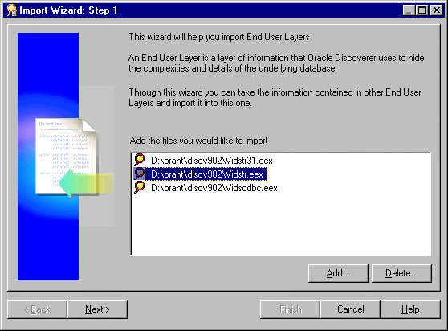
Selected files appear in the Import File list.
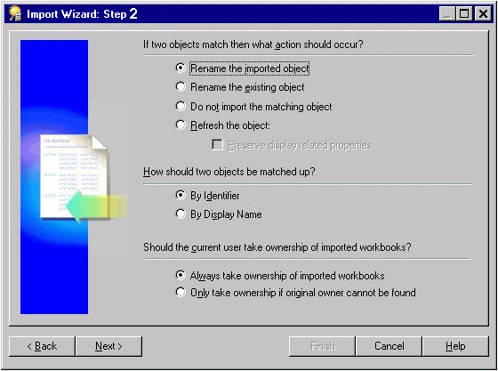
This dialog enables you to specify how Discoverer Administrator processes matching objects from another EUL. For more information about matching objects from another EUL, see "What are identifiers?".
An object means any EUL object, for example, folder, item, calculated item.
This dialog enables you to start the import and monitor its status as each EUL object is processed.
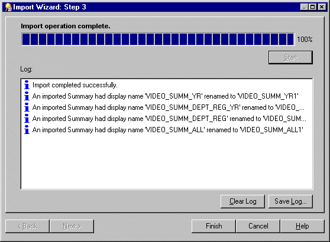
Hint: You can abort the import at any point by clicking Cancel. For example, you might want to abort the import if there are warning messages in the Import Log.
Identifiers are unique names that Discoverer Administrator uses to identify unique EUL objects (and workbook objects in Discoverer Plus and Discoverer Viewer).
Discoverer Administrator uses identifiers to recognize when an object imported from another EUL refers to the same business object in the EUL you are importing into. This enables customized (or patched) EUL objects to be preserved. For example, a folder named Sales in EUL A may refer to the same folder named Sales Figures in EUL B. Both folders have the same identifier and can therefore be recognized as referring to the same EUL object.
Identifiers are visible in Discoverer Administrator but are hidden from Discoverer Plus users.
Typically, you will never need to alter an identifier. Indeed, changing identifiers is not advisable because it can affect the relationships between EUL objects. However, in some cases you might want to modify identifiers. For example, you might want to modify identifiers:
In a future release of Discoverer, there will be a change to the valid characters that can be used in identifiers. The following characters will continue to be supported for use in identifiers in future releases of Discoverer:
However, the following characters will be de-supported in future releases of Discoverer:
For this release:
Please modify any identifiers that use the de-supported characters so that the identifiers will be valid in future releases.
Note: To locate the identifier of a workbook or worksheet in Discoverer Plus, see the Oracle Application Server Discoverer Plus User's Guide.
The minimum default tablespace of 3MB suggested in the "Create EUL Wizard: Step 2 dialog" is based upon storage parameters that the EUL specifies when creating database objects for the EUL. If you install the tutorial, the figure of 3MB will be exceeded.
A newly created EUL has the following space requirements:
The amount of space that is actually used will depend on other factors, including the block size specified for the tablespace in which the EUL is created.
As an approximate guide, adding a typical business area to an EUL will increase the size of the EUL by 1MB. The more complicated the business area (e.g. the more summary folders and complex items it contains), the more space the business area will require.
A default tablespace of 10-20MB will be adequate under normal conditions, but the amount of default tablespace required is determined by the amount of metadata that defines your EUL. Therefore, the default tablespace required could be larger, or smaller than the amount available in the tablespace that you select.
The database table storage parameters for EUL tables are as follows:
STORAGE (
INITIAL 40960
NEXT 1024000
PCTINCREASE 0
)
STORAGE (
INITIAL 40960
NEXT 81920
PCTINCREASE 0
)
The database index storage parameters for EUL indexes are as follows:
There are two factors that might cause the EUL to use up more space:
Discoverer specifies an initial extent of 4096 for indexes, but the server will always allocate a minimum of two blocks for any segment. Therefore, if the block size is greater than 2k the indexes will take up more space than Discoverer calculates.
When a tablespace is created it is possible to specify the minimum extent for any extent created. This minimum size overrides the initial extent size if it is greater and therefore causes the EUL objects to use up more space than Discoverer calculates.
When you migrate EUL data using Discoverer Administrator's import and export facilities, you need to be aware of the following restrictions that relate to analytic functions (for more information about analytic functions, see the Oracle Application Server Discoverer Plus User's Guide):
Note that there are also issues to be aware of when upgrading EULs that contain analytic functions from one Discoverer release to another (e.g. when upgrading to Discoverer Version 9.0.4). For more information, see "Notes about upgrading EULs that contain analytic functions".
There are typically three steps in the EUL creation and maintenance lifecycle:
As the Discoverer manager, you will usually want to create the first-cut of a new EUL in a development environment rather than on the production database. To enable you to do this, the development environment must contain the same data tables that are to be used on the production database.
Creating the EUL in a development environment enables you to develop business area design without compromising the performance of production systems.
Having created business areas, folders, and items, you can create prototype workbooks. Get these prototypes reviewed by end user representatives in the development environment. When you have agreed on the workbook definitions, save them to the development environment database.
When you and the end user representatives are satisfied with the EUL, you are ready to move the EUL from the development environment to the production database.
The first time you move the EUL from the development environment to the production database, we recommend you use the database export/import tools. Take a database export of the EUL schema from the development database and import the EUL schema into the production database
When you have imported the EUL to the production database, run the eul5_id.sql script to give the new EUL a unique reference number.
Having run the eul5_id.sql script, you can grant the entire Discoverer end user community access to the EUL.
Having rolled out the EUL to the organization, typically you will start receiving requests to modify the EUL definitions.
If you want to make changes to the EUL, we recommend you make them in the development environment and then use Discoverer's export and import tools to move the changes to the production environment. Note that any updates made to the production environment might be lost.
Although the above is the recommended way to maintain the EUL, updates might have been made in the production environment that you do not want to lose. If this is the case, follow the steps below:
Note: Changes made in the production environment from this point on might be lost. We therefore recommend no such changes are made.
Note: Changes can now be made in the production environment again.
|
|
 Copyright © 2003 Oracle Corporation. All Rights Reserved. |
|